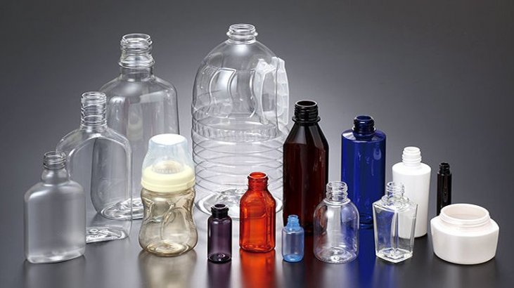

Em 1949 foi inaugurada a primeira fábrica de poliestireno, a Bakon S.A, em São Paulo. A comercialização de poliestireno foi de alto impacto e, no início dos anos 60, Lambert desenvolveu o processo para moldagem de poliestireno expandido.
Como funciona ?
Existem dois processos que são os mais importantes para que seja possível proporcionar a fabricação do plástico de forma eficaz, sendo estes a polimerização e a policondensação. Realizar os processos de polimerização. Processar os polímeros em resinas
de polímero finais. Fabricar produtos com o acabamento necessário.
Produtos fabricados
Produtos que são fabricado De modo geral, são as embalagens de alimentos e bebidas, tais como, garrafas PET, potes de sorvete, sacos de feijão e muito mais. Sua importância no mercado é que as embalagens de plásticos não deixam que os produtos sejam contaminados
Classificação
Termoendurecíveis: são aqueles que recebem a forma de produtos rígidos, através da ação do calor e de reações químicas, que são utilizadas para moldar novamente este componente. Termoplásticos: podem amolecer quando são aquecidos mas, quando endurecidos
novamente chegam a arrefecer, de modo que é possível moldar estes produtos diversas vezes. Este processo é um dos mais utilizados para a fabricação de plástico, e podemos perceber isso de forma facilitada uma vez que mais de 80% dos produtos
de plásticos, são fabricados a partir deste processo.

Produção
Processo de moldagem por injeção
A injeção de plásticos é um processo que consiste na fundição de um polímero para moldá-lo da maneira mais adequada e de acordo com a finalidade do projeto. Equipamentos médicos, eletrodomésticos, brinquedos, automóveis, eletrônicos, entre outros produtos
são frutos desse processo que proporcionam uma infinidade de criações de peças em todos os tamanhos.
Processo de extrusão do plástico
O processo de transformação por extrusão consiste, dentre outras aplicações, na produção de filmes plásticos que servem como insumos para embalagens flexíveis usadas em diversas aplicações. O material produzido por esse processo é utilizado na fabricação
de embalagens para o segmento alimentício, como embalagens para arroz, feijão, farinha, entre outros; produtos de higiene e limpeza; ou ainda na produção de embalagens usadas para empacotar várias unidades do do mesmo produto, as chamadas
embalagens “packs”.
Processo de sopro do plástico
O processo de transformação por sopro consiste, dentre outras aplicações, na produção de embalagens rígidas usadas em diversas aplicações. O material produzido por esse processo é utilizado na fabricação de embalagens rígidas de diversos segmentos industriais,
tais como, alimentício, fármaco, automotivo (óleos lubrificantes), saneantes, cosméticos e defensivos agrícolas.
Indústria química
Tendem a ser mais resistentes pois servem para armazenar ou locomover produtos com componentes químicos. Os mais comuns são os tanques tubos e conexões.
Composição Química
O plástico vem das resinas derivadas do petróleo e pertence ao grupo dos polímeros (moléculas muito grandes, com características especiais e variadas). Além disso, uma importante característica do plástico é manter a sua forma após a moldagem.
Mercado de trabalho
Como pudemos ver, o plástico está presente em pequenos utensílios, engrenagens, objetos do dia a dia e também em grandes indústrias, como a de embalagens, automotivas e até mesmo em aeronaves ou vestuários. Com essa análise é possível entender que o mercado
de trabalho para o profissional especializado em polímeros é muito amplo. Ele está geralmente ligado à linha industrial, voltado para os mais variados segmentos.As indústrias petroquímicas (fabricantes de matéria-prima), por exemplo, ou quaisquer
outras que utilizem o plástico na produção de peças ou produtos precisam de um profissional especializado nesse assunto. Empresas de setores como automobilístico, aeronáutica, embalagens, eletrodomésticos e farmacêuticos também exigem a participação
de um profissional com determinado conhecimento. Alguns cargos como operação de máquinas injetoras ou extrusoras são considerados os mais comuns nesse ramo,e por isso são amplamente procurados por empresas de diferentes portes.
Impactos ambientais
O descarte indevido, que resulta no entupimento de bueiros nas cidades e na poluição de rios, lagoas e oceanos. Mas os impactos do plástico na natureza começam bem antes, na extração de matérias-primas e no seu processo
de produção o custo financeiro dos prejuízos ambientais relacionados ao plástico ultrapassam os US$ 75 bilhões anuais, sendo que 30% desse valor vêm das emissões de gases do efeito estufa do setor e da poluição do ar causadas na fase de produção.
Mas, individualmente, é o ecossistema marinho que mais sofre com os plásticos. A poluição das águas, a morte de animais e o prejuízo para o turismo alcançam pelo menos os US$ 13 bilhões ao ano. Todo esse plástico acaba atrapalhando a navegação,
sujando praias e matando animais, que ingerem o material por o confundirem com alimento. poluição plástica ainda afeta a qualidade do ar, do solo e sistemas de fornecimento de água, uma vez que o descarte incorreto na natureza, polui aquíferos
e reservatórios.
(Os erres)
A reutilização e a reciclagem são processos fundamentais para garantir que os problemas causados pelos plásticos na natureza não cresçam ainda mais. Reutilizar o produto significa dar uma nova utilidade para um item já usado, dessa forma, evitando um
novo processo de fabricação daquele produto. Aumentando, assim, a vida útil dos materiais produzindo com menos recursos. Para que esse plástico no ambiente seja diminuído é preciso a nossa contribuição, e para que isso aconteça tem - se maneiras
de ajudar que são os erres ; Reutilização Reciclagem Reduzir
Plastico!
Plástico, tem seu nome originário do grego "plastikos" que significa - capaz de ser moldado, é um material de origem natural ou sintética, obtido a partir dos derivados de petróleo ou de fontes renováveis como a cana-de-açúcar ou o milho.